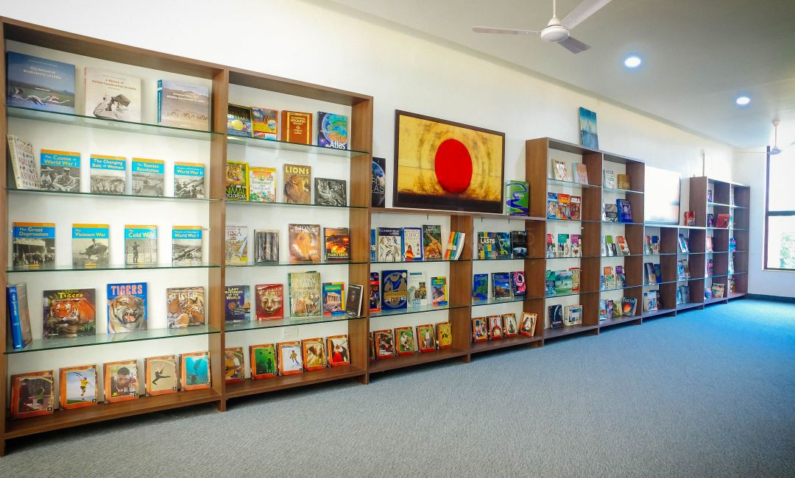
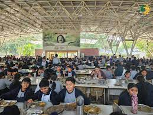

Campus-Life

the sanskaar valley school
Was established in 2006
Established under the aegis of the Sharda Devi Charitable Trust - it is a non- profit institution, & a tribute to the memory of our respected matriarch. The school is spread over a verdant & picturesque campus of 40 acres in an unpolluted, inspiring & happy environment.
School library
Wasbuild in 1980
A source of continuous delight and discovery for students, our library is spread over two floors and is an exhilarating treasure trove of information. In addition to a wide range of fiction and activity books, the library is well stocked with syllabus and reference books needed. Simple to locate and even simpler to use are the individual sections for journals and audio and video CDs. Our e-library is the resource center equipped with computers for both students and teachers, while an adjoining deck invites both silent reflection and animated brainstorming. Parents are welcome to help out in book selection and recommend reading and research material.
School Ground
Wasbuild in 2009
There are few things as joyful to behold as children at play. Also, a child's body needs to be exercised as much as the mind. We ensure that this happens in a systematic way and in a supervised environment. Thus, not only do we have the facilities for all major sports, we also have specialist coaches to make good use of the infrastructure. The school can boast of its sports facilities which are all state of the art and fit to host all national and international tournaments.
Dining Hall
Made to accommodate up to 1200 students at a time, the Dining Hall is an architectural marvel. It also has a state of the art kitchen with the latest cooking equipment. Designed and installed by experts, there is huge emphasis on cleanliness and hygiene. The school serves purely vegetarian, wholesome meals. Table manners, dining graces and values are reinforced as the school sits together as a community for breakfast and lunch. All meals are supervised by teachers.
